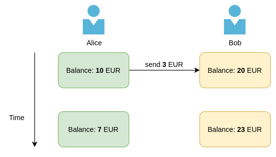
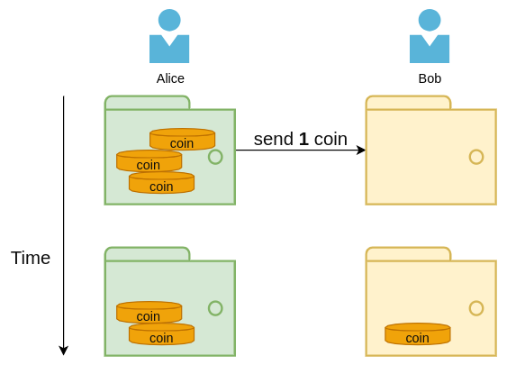
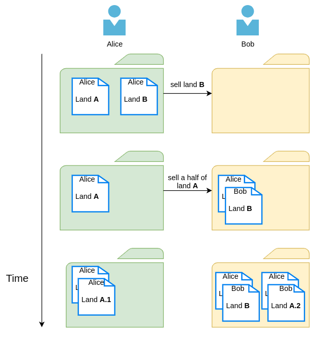
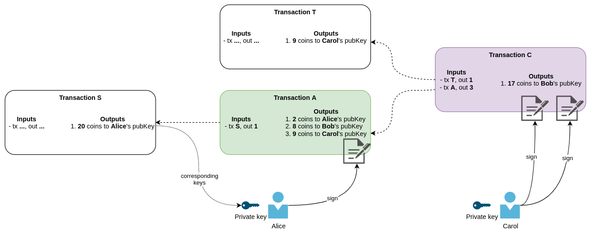

(Press ? for help, n and p for next and previous slide)
A science about various aspects in information security such as data confidentiality, data integrity, authentication, and non-repudiation
Traditionally participants in cryptographic schemes and protocols are named: Alice, Bob, Carol, …
A mathematical scheme for verifying the authenticity of a digital message or a digital document
A pair of keys
The principal book for recording and totaling economic transactions
Who owns what (e.g. banking system)

What is owned by whom (e.g. diamond tracking system)


Transaction Y
Hereby I am transferring ownership of my land A I received in transaction X in parts:
Alice's signature
Transaction Y
Hereby I am transferring ownership of my 2.7 coins I received in the first output of transaction X in parts:
I voluntarily pay 0.1 coin as a fee for the service.
Alice's signature

(like a pocket wallet does not have balance, but has coins)